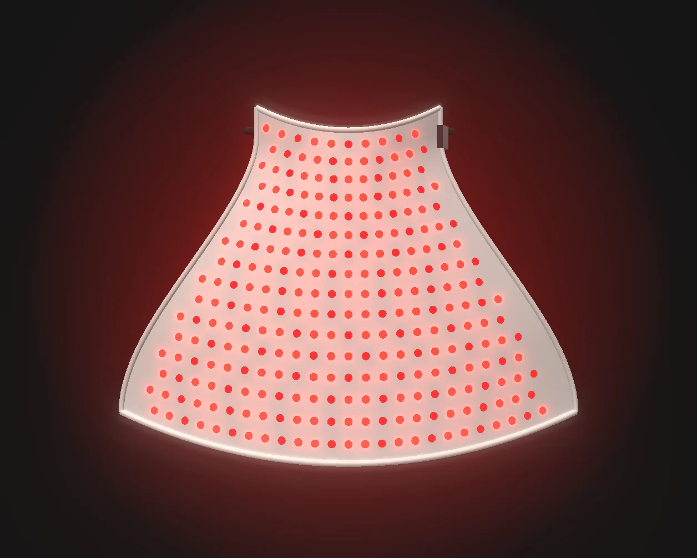
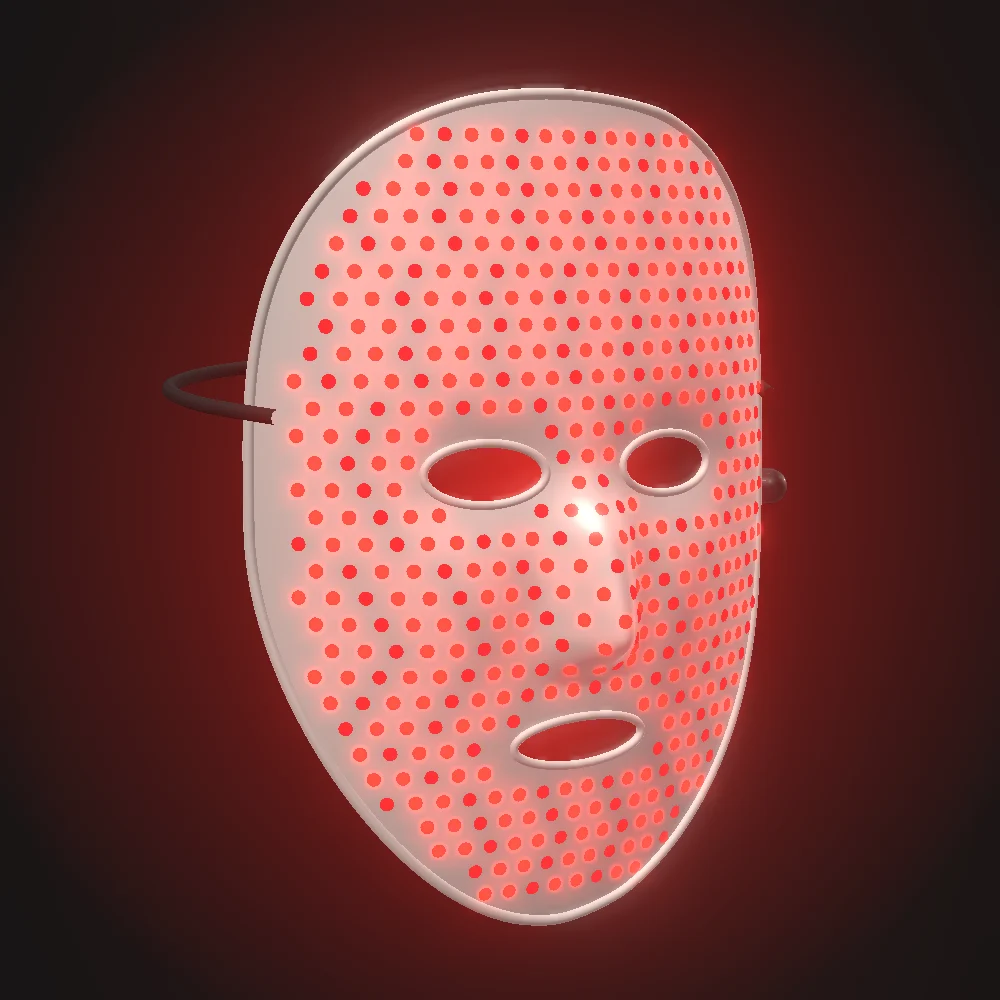

Mascarilla de luz roja para casa
Silicona flexible con LED de luz roja y casi infrarroja que cubren frente, mejillas y barbilla. Sesiones de diez minutos sin cables, desde 189 €.
- Garantía
- 3 años
- Devolución
- 14 días
- Envío
- Toda España
- Carga
- USB-C
Mascarillas para cara y cuello
Las dos usan la misma luz y el mismo mando: empieza con una y suma la otra después.
Tres modos de luz en cada mascarilla
Luz roja visible a 630 nm y casi infrarroja a 830 nm, que apenas se ve y llega más hondo en la piel.
630 nm
Modo rojo
Solo luz roja, la más usada en rutinas faciales.
830 nm
Modo infrarrojo
Luz casi infrarroja, más tranquila para la vista.
630 + 830
Modo combinado
Las dos luces a la vez durante toda la sesión.
Silicona flexible que sigue la forma de tu cara
Se curva sobre la nariz y los pómulos, así la luz queda a la misma distancia de toda la piel.
Diez minutos con la mascarilla, de tres a cinco veces por semana
Úsala por la tarde o por la noche, con la piel limpia y seca, antes de tu crema.
- 1. Limpia la piel
Sin maquillaje ni protector solar, para que la luz llegue directa.
- 2. Ajusta la cinta
La silicona se apoya sola; la cinta la sujeta por detrás de la cabeza.
- 3. Pulsa el mando
Elige el modo y relájate. La mascarilla se apaga sola al terminar.

Especificaciones de las dos mascarillas
- Batería8 sesiones por carga
- Tiempo de carga2 horas
- Peso facial290 g
- Peso cuello210 g
- Grosor2 mm
- En la cajaMascarilla, mando, cable y funda

¿La mascarilla es segura para los ojos?
La luz roja no es ultravioleta y la mascarilla tiene aberturas para los ojos. Si te molesta el brillo, cierra los ojos durante la sesión.
¿Quién no debería usar la mascarilla?
Si estás embarazada, tienes epilepsia fotosensible o tomas medicación que aumenta la sensibilidad a la luz, consulta antes con tu médico.
¿Puedo usar sérum con la mascarilla?
Sí. Aplícalo después de la sesión, cuando ya te hayas quitado la mascarilla.
¿Cómo se limpia la silicona?
Pasa un paño húmedo con jabón neutro por el interior después de cada uso. No la sumerjas en agua.
¿Cuándo se nota el efecto de la luz roja?
Depende de cada piel y de la constancia. La mayoría de rutinas se valoran tras varias semanas de uso regular.
Precios y pedido
Elige una mascarilla o las dos. Te escribimos para confirmar el pago y el envío.
- Mascarilla facial189 €
- Cuello y escote149 €
- Las dos juntas299 €
